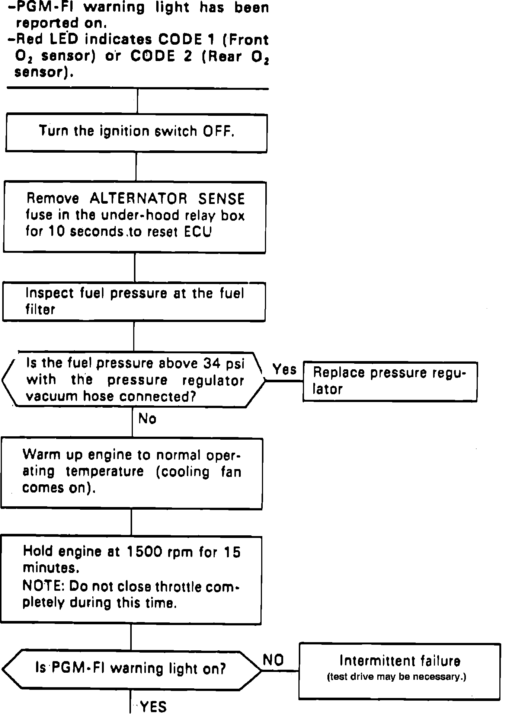
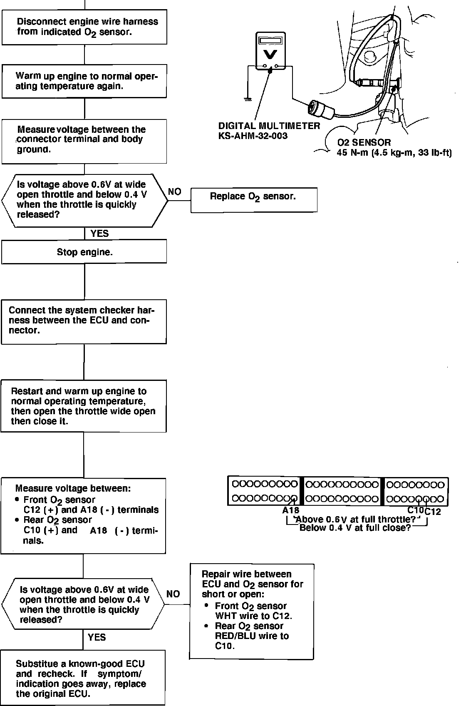

Coupe


Self-diagnosis Red LED blinks once: A problem in the Front Oxygen (O2) Sensor circuit.
The oxygen sensor, detects the oxygen content in the exhaust gas, and inputs the ECU. In operation, the ECU receives the signals from the sensor and varies the duration during which fuel is injected. The oxygen sensors are installed on the exhaust manifolds.